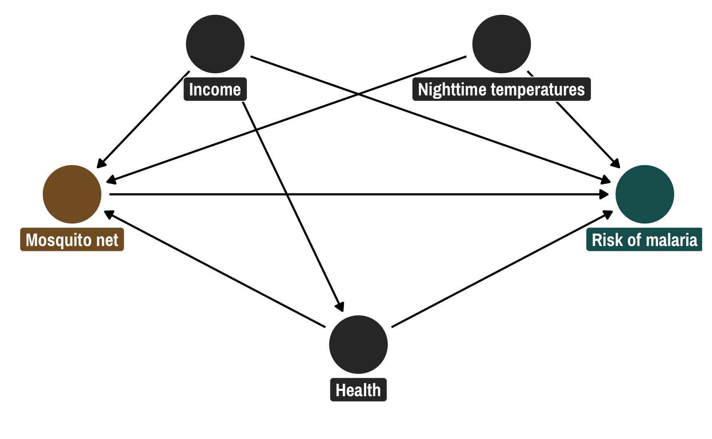
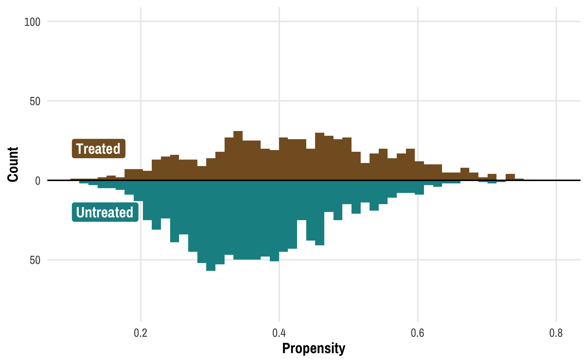
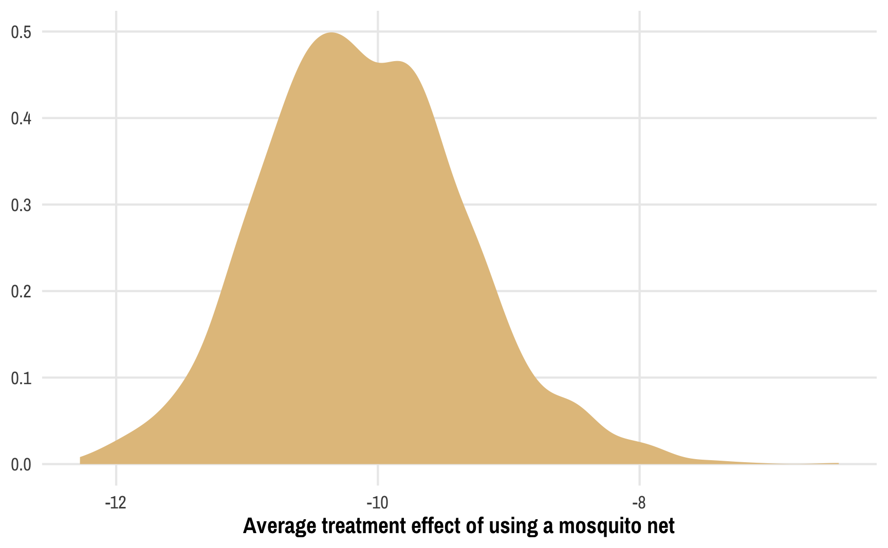

![]()
library(tidyverse)
library(brms)
library(broom)
library(broom.mixed)
library(ggdag)
library(MetBrewer)
set.seed(3273) # From random.org
# Use the delightful Isfahan1 palette from the MetBrewer package
isfahan <- MetBrewer::met.brewer("Isfahan1")
# Custom ggplot theme to make pretty plots
# Get Archivo Narrow at https://fonts.google.com/specimen/Archivo+Narrow
theme_nice <- function() {
theme_minimal(base_family = "Archivo Narrow") +
theme(panel.grid.minor = element_blank(),
plot.background = element_rect(fill = "white", color = NA),
plot.title = element_text(face = "bold"),
axis.title = element_text(face = "bold"),
strip.text = element_text(face = "bold", size = rel(0.8), hjust = 0),
strip.background = element_rect(fill = "grey80", color = NA),
legend.title = element_text(face = "bold"))
}
# Use this theme on all plots
theme_set(
theme_nice()
)
# Make all labels use Archivo by default
update_geom_defaults("label",
list(family = "Archivo Narrow",
fontface = "bold"))This post combines two of my long-standing interests: causal inference and Bayesian statistics. I’ve been teaching a course on program evaluation and causal inference for a couple years now and it has become one of my favorite classes ever. It has reshaped how I do my research, and I’ve been trying to carefully incorporate causal approaches in my different project—as evidenced by an ever-growing series of blog posts here about different issues I run into and figure out (like this and this and this and this.)
Additionally, ever since stumbling on this blog post as a PhD student back in 2016 following the invention of rstanarm and brms, both of which make it easy to use Stan with R, I’ve been as Bayesian as possible in all my research. I find Bayesian approaches to inference way more intuitive than frequentist null hypothesis significance testing. My work with Bayesian approaches has also led to a bunch of blog posts here (like this and this and this).
However, the combination of these two interests is a little fraught. In one of my projects, I’m using marginal structural models and inverse probability weights to account for confounding and make causal claims. I also want to do this Bayesianly so that I can work with posterior distributions and use Bayesian inference rather than null hypotheses and significance. But using inverse probability weights and Bayesian methods simultaneously seems to be impossible! Robins, Hernán, and Wasserman (2015) even have an article where they explicitly say that “Bayesian inference must ignore the propensity score,” effectively making it impossible to use things like inverse probability weights Bayesianly. Oh no!
I recently came across a new article that gives me hope though! There’s a group of epidemiologists and biostatisticians who have been working on finding ways to use a Bayesian approach to propensity scores and weights (Saarela et al. (2015); Zigler (2016); Liao and Zigler (2020), among others), and Liao and Zigler (2020) provide a useful (and understandable!) approach for doing it. This post is my attempt at translating Liao and Zigler’s paper from conceptual math and MCMCPack-based R code into tidyverse, brms, and Stan-based code. Here we go!
Who this post is for
Here’s what I assume you know:
- You’re familiar with R and the tidyverse (particularly dplyr and ggplot2).
- You’re familiar with brms for running Bayesian regression models. See the vignettes here, examples like this, or resources like these for an introduction.
- You know a little about DAGs and causal model-based approaches to causal inference, and you’ve heard about statistical adjustment to isolate causal effects (i.e. “closing backdoors in a DAG”)
General approach to inverse probability weighting
I won’t go into the details of how inverse probability weighting works here. For more details, check out this fully worked out example or this chapter, which has references to lots of other more detailed resources. Instead, I’ll provide a super short abbreviated overview of how inverse probability weights are used for causal inference and why and how we can use them.
When trying to make causal inferences with observational data, there is inevitably confounding—people self-select into (or out of) treatment conditions because of a host of external factors. We can adjust for these confounding factors with lots of different methods. Quasi-experimental approaches like difference-in-differences, regression discontinuity, and instrumental variables let us use specific (and often weird) situations to adjust for confounding and make comparable treatment and control groups. Alternatively, we can use model-based inference using DAGs and do-calculus, identifying which variables open up backdoor pathways between treatment and outcome, and statistically adjusting for those variables to isolate the treatment → outcome pathway.
One way to adjust for confounders is to use inverse probability weighting. In short, here’s how it works for a binary (0/1) treatment:
Create a model that predicts treatment (often called a treatment model or design stage). Use confounders (identified with a DAG) as the covariates. Use whatever modeling approach you want here—logistic regression, random forests, fancy machine learning things, etc.
Use the results of the treatment model to calculate propensity scores.
Convert those propensity scores into inverse probability of treatment weights (IPTW) using this formula:
\[ \frac{\text{Treatment}}{\text{Propensity}} + \frac{1 - \text{Treatment}}{1 - \text{Propensity}} \]
Create a model that estimates the effect of treatment on outcome, weighted by the IPTWs (often called an outcome model or analysis stage). The coefficient for the treatment variable is the average treatment effect (ATE).
Basic frequentist example
Throughout this post, we’ll use some simulated data for a fake hypothetical social program that distributes mosquito nets in order to reduce malaria risk. I created this data for my course on program evaluation and causal inference and use it for teaching adjustment with inverse probability weighting.
nets <- read_csv("https://evalf21.classes.andrewheiss.com/data/mosquito_nets.csv")I normally use a more complicated DAG with other nodes that don’t need to be adjusted for, but for the sake of simplicity here, this DAG only includes the confounders. The relationship between net usage (measured as a 0/1 binary variable where 1 = person used a net) and malaria risk (measured on a scale of 0-100, with higher values representing higher risk) is confounded by monthly income (in USD), health (measured on a scale of 0-100, with higher values representing better health), and nighttime temperatures at the person’s home (measured in Celsius).
mosquito_dag <- dagify(
malaria_risk ~ net + income + health + temperature,
net ~ income + health + temperature,
health ~ income,
exposure = "net",
outcome = "malaria_risk",
coords = list(x = c(malaria_risk = 7, net = 3, income = 4, health = 5, temperature = 6),
y = c(malaria_risk = 2, net = 2, income = 3, health = 1, temperature = 3)),
labels = c(malaria_risk = "Risk of malaria", net = "Mosquito net", income = "Income",
health = "Health", temperature = "Nighttime temperatures",
resistance = "Insecticide resistance")
)
# Turn DAG into a tidy data frame for plotting
mosquito_dag_tidy <- mosquito_dag %>%
tidy_dagitty() %>%
node_status() # Add column for exposure/outcome/latent
status_colors <- c(exposure = isfahan[2], outcome = isfahan[7], latent = "grey50")
# Fancier graph
ggplot(mosquito_dag_tidy, aes(x = x, y = y, xend = xend, yend = yend)) +
geom_dag_edges() +
geom_dag_point(aes(color = status)) +
geom_label(aes(label = label, fill = status),
color = "white", fontface = "bold", nudge_y = -0.3) +
scale_color_manual(values = status_colors, na.value = "grey20") +
scale_fill_manual(values = status_colors, na.value = "grey20") +
guides(color = "none", fill = "none") +
theme_dag()
Following the logic of do-calculus, we need to adjust for three of these nodes in order to isolate the pathway between net usage and malaria risk:
library(dagitty)
adjustmentSets(mosquito_dag)
## { health, income, temperature }We can adjust for these variables using inverse probability weighting. We’ll first make a treatment model (or “design stage” in the world of biostats) that uses these confounders to predict net use, then we’ll create propensity scores and inverse probability treatment weights, and then we’ll use those weights in an outcome model (or “analysis stage” in the world of biostats) to calculate the average treatment effect (ATE) of net usage.
I built in a 10 point decrease in malaria risk due to nets (hooray for fake data!), so let’s see if we can recover that treatment effect:
# Step 1: Create model that predicts treatment status using confounders
model_treatment_freq <- glm(net ~ income + temperature + health,
data = nets,
family = binomial(link = "logit"))
# Step 2: Use the treatment model to calculate propensity scores, and
# Step 3: Use the propensity scores to calculate inverse probability of treatment weights
nets_with_weights <- augment(model_treatment_freq, nets,
type.predict = "response") %>%
rename(propensity = .fitted) %>%
mutate(iptw = (net_num / propensity) + ((1 - net_num) / (1 - propensity)))
# Step 4: Use the IPTWs in a model that estimates the effect of treatment on outcome
model_outcome_freq <- lm(malaria_risk ~ net,
data = nets_with_weights,
weights = iptw)
# Coefficient for `net` should be -10ish
tidy(model_outcome_freq)
## # A tibble: 2 × 5
## term estimate std.error statistic p.value
## <chr> <dbl> <dbl> <dbl> <dbl>
## 1 (Intercept) 39.7 0.468 84.7 0
## 2 netTRUE -10.1 0.658 -15.4 3.21e-50It worked! After going through this two-step process of (1) creating propensity scores and weights, and (2) using those weights to estimate the actual effect, we successfully closed the backdoor pathways that confounded the relationship between net use and malaria risk, ending up with an unbiased ATE. Neato.
Pseudo-populations
Before looking at how to do this analysis Bayesianly, it’s helpful to understand what these weights are actually doing behind the scenes. The point of these IPTWs is to create pseudo-populations of treated and untreated observations that are comparable across all the different levels of confounders. They’re essentially a way to let us fake treatment and control groups so that we can interpret the results of outcome models causally.
Visualizing the propensity scores for treated and untreated people can help show what’s going on. Here are the distributions of propensity scores for these two groups: the treated group is in the top half in brown; the untreated group is in the bottom half in turquoise. (Thanks to Lucy D’Agostino McGowan for this really neat way of looking at weight distributions!)
ggplot() +
geom_histogram(data = filter(nets_with_weights, net_num == 1),
bins = 50, aes(x = propensity),
fill = isfahan[2]) +
geom_histogram(data = filter(nets_with_weights, net_num == 0),
bins = 50, aes(x = propensity, y = -..count..),
fill = isfahan[6]) +
geom_hline(yintercept = 0) +
annotate(geom = "label", x = 0.1, y = 20, label = "Treated",
fill = isfahan[2], color = "white", hjust = 0) +
annotate(geom = "label", x = 0.1, y = -20, label = "Untreated",
fill = isfahan[6], color = "white", hjust = 0) +
scale_y_continuous(label = abs) +
coord_cartesian(xlim = c(0.1, 0.8), ylim = c(-80, 100)) +
labs(x = "Propensity", y = "Count")
## Warning: The dot-dot notation (`..count..`) was deprecated in ggplot2 3.4.0.
## ℹ Please use `after_stat(count)` instead.
We can learn a few different things from this plot. Fewer people received the treatment than didn’t—there are more people in the untreated part of the graph. We can confirm this really quick:
nets %>% count(net)
## # A tibble: 2 × 2
## net n
## <lgl> <int>
## 1 FALSE 1071
## 2 TRUE 681Yep. There are ≈400 more net-non-users than net-users.
We can also see that those who did not receive treatment tend to have a lower probability of doing so—the bulk of the untreated distribution is clustered in the low end of propensity scores. This makes sense! If people have a low chance of using a mosquito net, there should be fewer people ultimately using a bed net.
But these two groups—treated and untreated—aren’t exactly comparable at this point. There are confounding factors that make people who didn’t use nets less likely to use them. To make causal inferences about the effect of nets, we’d need to look at a “treatment” and a “control” group with similar characteristics and with similar probabilities of using nets.
To get around this, we can create two pseudo-populations of treated and untreated people. We can give less statistical importance (or weight) to those who had a low probability of being treated and who subsequently weren’t treated (since there are a ton of those people) and more statistical weight to those who had a high probability of being treated but weren’t. Similarly, we can give more weight to treated people who had a low probability of being treated (that’s surprising!) and less weight to treated people who had a high probability of being treated (that’s not surprising!). If we scale each person by their weight, given the confounders of income, temperature, and health, we can create comparable treated and untreated populations:
ggplot() +
geom_histogram(data = filter(nets_with_weights, net_num == 1),
bins = 50, aes(x = propensity, weight = iptw),
fill = colorspace::lighten(isfahan[2], 0.35)) +
geom_histogram(data = filter(nets_with_weights, net_num == 0),
bins = 50, aes(x = propensity, weight = iptw, y = -..count..),
fill = colorspace::lighten(isfahan[6], 0.35)) +
geom_histogram(data = filter(nets_with_weights, net_num == 1),
bins = 50, aes(x = propensity),
fill = isfahan[2]) +
geom_histogram(data = filter(nets_with_weights, net_num == 0),
bins = 50, aes(x = propensity, y = -..count..),
fill = isfahan[6]) +
annotate(geom = "label", x = 0.8, y = 70, label = "Treated (actual)",
fill = isfahan[2], color = "white", hjust = 1) +
annotate(geom = "label", x = 0.8, y = 90, label = "Treated (IPTW pseudo-population)",
fill = colorspace::lighten(isfahan[2], 0.35), color = "white", hjust = 1) +
annotate(geom = "label", x = 0.8, y = -60, label = "Untreated (actual)",
fill = isfahan[6], color = "white", hjust = 1) +
annotate(geom = "label", x = 0.8, y = -80, label = "Untreated (IPTW pseudo-population)",
fill = colorspace::lighten(isfahan[6], 0.35), color = "white", hjust = 1) +
geom_hline(yintercept = 0, color = "white", size = 0.25) +
scale_y_continuous(label = abs) +
coord_cartesian(xlim = c(0.1, 0.8), ylim = c(-80, 100)) +
labs(x = "Propensity", y = "Count")
## Warning: Using `size` aesthetic for lines was deprecated in ggplot2 3.4.0.
## ℹ Please use `linewidth` instead.
This plot shows the original distributions for treated and untreated propensities in darker colors and overlays the weighted/adjusted propensities in lighter colors. These pseudo-populations mirror each other pretty well now! These two rescaled and reweighted groups are now much more equally sized and comparable: the low-propensity net users have a much higher weight, while high-propensity non-net users also get more weight.
Bayesian inverse probability weighting
Why even do this Bayesianly?
We successfully found the causal effect of -10 malaria risk points using regular frequentist regression, so why am I trying to make life more complex and do this with Bayesian methods instead? Mostly because I’m not a fan of null hypothesis signficance testing (NHST), or the whole process of proposing a null hypothesis, generating a statistical test, finding a p-value, and seeing if the test/p-value/confidence interval provides enough evidence to reject the null hypothesis. With frequentist statistics we test for the probability of the data given a null hypothesis, or \(P(\text{data} \mid H_0)\), while with Bayesian statistics, we get to test for the probability of a hypothesis given the data, or \(P(H \mid \text{data})\).
Testing a hypothesis directly with Bayesian inference is a lot more intuitive, with Bayesian credible intervals and inferential approaches like measuring the probability that a parameter is greater/less than 0 (i.e. probability of direction), or measuring the proportion of a posterior that falls within a null region of practical equivalence, or ROPE. See this page for an overview of all these methods and a comparison with frequentism, and check out this amazing (and free!) textbook on Bayesianism in general.
Plus, the amazing brms package lets us make all sorts of powerful and complex models with multilevel nested intercepts and slopes and fancy families like beta, zero-inflated beta, hurdled lognormal, and so on.
Fundamental problem with Bayesian propensity scores
However, there are serious mathematical and philosophical issues with using propensity scores (and IPTWs) in Bayesian models. Put simply, IPTWs aren’t actually part of the model! They’re a neat way to scale and shift the population into comparable pseudo-populations, but they’re not part of the data-generating process for any element of a Bayesian model.
Here’s how Robins, Hernán, and Wasserman (2015), Zigler (2016), and Liao and Zigler (2020) explain it (but substantially simplified to the point of being a little bit wrong, but acceptably wrong). We can more formally define the average treatment effect (ATE) of mosquito nets on malaria risk using this estimand:
\[ \Delta_{\text{ATE}} = E[ \overbrace{E \left( Y_i \mid T_i = 1, X_i \right)}^{\substack{\text{Average outcome } Y \text{ when} \\ \text{treated, given confounders }X}} - \overbrace{E \left( Y_i \mid T_i = 0, X_i \right)}^{\substack{\text{Average outcome } Y \text{ when} \\ \text{not treated, given confounders }X}} ] \]
There are three moving parts in the equation for the ATE here: the treatment effect is a function of the outcome \(Y\) (malaria risk), the treatment \(T\) (nets), and all other covariates \(X\) (health, income, temperatures). In order to calculate this ATE, we need to create some sort of function that incorporates all three, or something like this that calculates \(\Delta\) given \(T\), \(X\), and \(Y\):
\[ f(\Delta \mid \boldsymbol{T}, \boldsymbol{X}, \boldsymbol{Y}) \]
This works well with Bayesian methods. We don’t know what \(\Delta\) is, so we can use Bayes’ theorem to estimate it given our existing data for \(T\), \(X\), and \(Y\). To quote from Liao and Zigler (2020),
[T]raditional Bayeisan inference for \(\Delta\) would follow from specification of a likelihood for \((\boldsymbol{T}, \boldsymbol{X}, \boldsymbol{Y})\) conditional on unknown parameters, \(\theta\), a prior distribution for \(\theta\), and some function relating the data and \(\theta\) to the quantity \(\Delta\).
Note that the equation below is slightly wrong—ordinarily in Bayesian modeling we’re interested in estimating an unknown \(\theta\) parameter, so if we wanted to be super official we’d need to create “some function relating the data and \(\theta\) to the quantity \(\Delta\)”, but for the sake of simplicity and intuition we’ll skip that part and pretend that \(\Delta\) is the output of the model:
\[ \overbrace{P[\Delta \mid (\boldsymbol{T}, \boldsymbol{X}, \boldsymbol{Y})]}^{\substack{\text{Posterior estimate} \\ \text{of } \Delta \text{, given data}}} \propto \overbrace{P[(\boldsymbol{T}, \boldsymbol{X}, \boldsymbol{Y}) \mid \Delta]}^{\substack{\text{Likelihood for existing} \\ \text{data, given unknown }\Delta}} \times \overbrace{P[\Delta]}^{\substack{\text{Prior} \\ \text{for }\Delta}} \]
But guess what’s missing entirely from this equation?! Our weights! Propensity scores and inverse probability weights have no place in this kind of Bayesian estimation. They would theoretically show up in the likelihood part of the Bayesian equation, but in practice, weights aren’t part of the data-generating process and thus aren’t actually part of the likelihood. This is the key problem with Bayesian weights: these weights are not part of the model for calculating the ATE (\(f(\Delta \mid \boldsymbol{T}, \boldsymbol{X}, \boldsymbol{Y})\)). We can’t set a prior on the weight parameter—there isn’t even a weight parameter to work with in the likelihood. In order to be a true Bayesian, we can’t use propensity scores and weighting. This is the argument that Robins, Hernán, and Wasserman (2015) make: because propensity scores (and thus weights) aren’t part of the likelihood, we can’t do anything Bayesian with them.
And that’s disappointing because Bayesian inference is great! I find it far more intuitive (and fun) to make inferences with posterior distributions rather than work with null hypothesis significance testing.
A legal way to use weights Bayesianly
Fortunately, Robins, Hernán, and Wasserman (2015) conclude by saying that there are possible compromises that we can use to work with weights in a Bayesian framework, and Liao and Zigler (2020) explore one of these compromises and propose a method of incorporating propensity scores into Bayesian estimation of causal effects. Their general approach is to think of the propensity score calculation as a new parameter \(\nu\) (nu). Instead of calculating a single value of \(\nu\) (i.e. a single set of propensity scores or weights) like we did with frequentist estimation, we incorporate a range of reasonable values of \(\nu\) from the posterior distribution of the treatment/design model into the outcome model, which essentially lets us get rid of the \(\nu\) term. Mathematically the approach looks like this:
\[ \overbrace{f(\Delta \mid \boldsymbol{T}, \boldsymbol{X}, \boldsymbol{Y})}^{\substack{\text{Estimand for} \\ \text{the ATE, without } \nu}} = \int_\nu \overbrace{f(\Delta \mid \boldsymbol{T}, \boldsymbol{X}, \boldsymbol{Y}, \nu)}^{\substack{\text{Outcome model} \\ \text{with } \nu}}\ \overbrace{f(\nu \mid \boldsymbol{T}, \boldsymbol{X})}^{\substack{\text{Treatment model} \\ \text{creating propensity} \\ \text{scores with } T \text{ and } X}}\ \mathrm{d} \nu \]
The \(f(\nu \mid \boldsymbol{T}, \boldsymbol{X})\) part of the equation is the treatment/design model and it doesn’t have any information about the outcome \(Y\) in it. In our running example, this is net ~ confounders. The \(f(\Delta \mid \boldsymbol{T}, \boldsymbol{X}, \boldsymbol{Y}, \nu)\) part of the equation is the outcome model and it incorporates \(\nu\). This isn’t the final estimand, which doesn’t have the propensity scores (\(\nu\)) in it. We ultimately get rid of that \(\nu\) term by marginalizing over the distribution for \(\Delta\).
To simplify this process more, here’s the basic process for doing this:
- Use a Bayesian model to estimate the likelihood of treatment and generate propensity scores (\(\nu\)). This is the treatment model (or design model) and is analogous to the logistic regression model
model_treatment_freqthat we ran earlier. - Generate \(K\) samples of propensity scores based on the posterior distribution of propensity scores. This can be whatever number you want—often it’s the number of posterior chains from the Bayesian model (like 2,000 or however many iterations you use).
- For each of the \(K\) samples, generate inverse probability weights and run an outcome model using those weights. This essentially means that we’ll be running the outcome model
malaria_risk ~ neta bunch of times based on different weights each time. - Combine the results from the outcome model to create the final \(\nu\)-free ATE.
This process is similar to multiple imputation or bootstrapping: run the same model a bunch of times on slightly different data and combine the results.
Here’s what this looks like in practice. First we’ll predict net usage based on the confounders of income, temperature, and health using brms (with default priors and settings):
model_treatment <- brm(
bf(net ~ income + temperature + health,
decomp = "QR"), # QR decomposition handles scaling and unscaling for us
family = bernoulli(), # Logistic regression
data = nets,
chains = 4, cores = 4, iter = 1000,
seed = 1234, backend = "cmdstanr"
)
## Start samplingWe’ll then use posterior_epred() to plug the original data into each of the posterior draws to calculate propensity scores for each draw. This will give us a lot of propensity scores: 2,000 probabilities for each of the 1,752 people in the data.
# Extract posterior predicted propensity scores
pred_probs_chains <- posterior_epred(model_treatment)
dim(pred_probs_chains)
## [1] 2000 1752
# Rows are chains; columns are individuals
head(pred_probs_chains, c(5, 10))
## [,1] [,2] [,3] [,4] [,5] [,6] [,7] [,8] [,9] [,10]
## [1,] 0.382 0.383 0.157 0.282 0.342 0.436 0.470 0.406 0.399 0.378
## [2,] 0.357 0.395 0.140 0.242 0.286 0.437 0.497 0.452 0.421 0.344
## [3,] 0.342 0.369 0.117 0.203 0.236 0.394 0.470 0.443 0.396 0.303
## [4,] 0.339 0.352 0.124 0.206 0.237 0.372 0.439 0.415 0.373 0.298
## [5,] 0.338 0.359 0.120 0.210 0.246 0.388 0.454 0.420 0.382 0.306Each column here is a person in the dataset; each row is a draw from the posterior distribution. Note how there’s a lot of uncertainty in these propensity scores—we want to incorporate this uncertainty into our outcome model somehow. But as we’ve seen, there’s no weight parameter in our model, so there’s no way to directly add this uncertainty to the outcome model. Instead, we’ll run the outcome model a bunch of times, or \(K\) times. For now we’ll set \(K\) to 2,000—we’ll create an outcome model for each of the posterior draws that we have.
Doing this will require a little bit of purrr magic. We’ll make a dataset with 2,000 (\(K\)) rows and put the propensity scores for all 1,752 people into their own cell to make it easier to keep track of these scores.
# Put each set of individual propensity scores into its own cell
pred_probs_nested <- pred_probs_chains %>%
# Convert this matrix to a data frame
as_tibble(.name_repair = "unique") %>%
# Add a column for the draw number
mutate(draw = 1:n()) %>%
# Make this long so that each draw gets its own row
pivot_longer(-draw, names_to = "row", values_to = "prob") %>%
# Clean up the draw number
mutate(row = as.numeric(str_remove(row, "..."))) %>%
# Group by draw and nest all the scores in a cell
group_by(draw) %>%
nest() %>%
ungroup()
pred_probs_nested
## # A tibble: 2,000 × 2
## draw data
## <int> <list>
## 1 1 <tibble [1,752 × 2]>
## 2 2 <tibble [1,752 × 2]>
## 3 3 <tibble [1,752 × 2]>
## 4 4 <tibble [1,752 × 2]>
## 5 5 <tibble [1,752 × 2]>
## 6 6 <tibble [1,752 × 2]>
## 7 7 <tibble [1,752 × 2]>
## 8 8 <tibble [1,752 × 2]>
## 9 9 <tibble [1,752 × 2]>
## 10 10 <tibble [1,752 × 2]>
## # … with 1,990 more rowsWe’ll then run an outcome model using each of these nested propensity scores. We’ll take the scores, calculate weights, and run a basic frequentist lm() model with those weights. We’ll then use tidy() from broom to extract different parts of the results.
outcome_models <- pred_probs_nested %>%
mutate(outcome_model = map(data, ~{
# Add this version of propensity scores to the original data and calculate
# weights. We could also do this prior to nesting everything.
df <- bind_cols(nets, .) %>%
mutate(iptw = (net_num / prob) + ((1 - net_num) / (1 - prob)))
# Create outcome model with this iteration of weights
model <- lm(malaria_risk ~ net, data = df, weights = iptw)
})) %>%
# Extract results
mutate(tidied = map(outcome_model, ~tidy(.)),
ate = map_dbl(tidied, ~filter(., term == "netTRUE") %>% pull(estimate)),
ate_se = map_dbl(tidied, ~filter(., term == "netTRUE") %>% pull(std.error)))
outcome_models
## # A tibble: 2,000 × 6
## draw data outcome_model tidied ate ate_se
## <int> <list> <list> <list> <dbl> <dbl>
## 1 1 <tibble [1,752 × 2]> <lm> <tibble [2 × 5]> -9.71 0.662
## 2 2 <tibble [1,752 × 2]> <lm> <tibble [2 × 5]> -9.37 0.665
## 3 3 <tibble [1,752 × 2]> <lm> <tibble [2 × 5]> -9.15 0.670
## 4 4 <tibble [1,752 × 2]> <lm> <tibble [2 × 5]> -9.89 0.665
## 5 5 <tibble [1,752 × 2]> <lm> <tibble [2 × 5]> -9.40 0.669
## 6 6 <tibble [1,752 × 2]> <lm> <tibble [2 × 5]> -10.8 0.654
## 7 7 <tibble [1,752 × 2]> <lm> <tibble [2 × 5]> -9.03 0.669
## 8 8 <tibble [1,752 × 2]> <lm> <tibble [2 × 5]> -8.58 0.673
## 9 9 <tibble [1,752 × 2]> <lm> <tibble [2 × 5]> -9.67 0.664
## 10 10 <tibble [1,752 × 2]> <lm> <tibble [2 × 5]> -11.0 0.651
## # … with 1,990 more rowsThe ate column here is the coefficient for net, and we have 2,000 of them to work with now, each based on a different set of weights. If we average all these estimates, we can get one final estimate of the ATE that successfully incorporates the uncertainty from the treatment/design model. We can’t take the direct average of the standard errors, but we can combine them using Rubin’s rules. Rubin (1987) outlines an set of rules for combining the results from multiply imputed datasets that reflects the averages and accounts for differences in standard errors (they’re essentially a fancier, more robust way of averaging standard errors across multiple models). We didn’t use multiply imputed datasets here, but the same principle applies—we used the same model on lots of slightly different datasets.
# Combined average treatment effect
mean(outcome_models$ate)
## [1] -10.1
# Combined standard errors (this is wrong)
mean(outcome_models$ate_se)
## [1] 0.659
# Combined standard errors with Rubin's rules (this is correct)
rubin_se <- function(ates, sigmas) {
sqrt(mean(sigmas^2) + var(ates))
}
rubin_se(outcome_models$ate, outcome_models$ate_se)
## [1] 1.02The overall average treatment effect is still −10ish, like we found earlier, but now we have a bunch of extra uncertainty from the treatment model, which is neat. We can also visualize the distribution of the ATE, almost like a Bayesian posterior:
ggplot(outcome_models, aes(x = ate)) +
geom_density(fill = isfahan[4], color = NA) +
labs(x = "Average treatment effect of using a mosquito net", y = NULL)
We did it!
Things I don’t know yet but want to know!
So, thanks to Liao and Zigler (2020), we have a fully Bayesian treatment/design model and we can incorporate the uncertainty from that model’s propensity scores and weights into the outcome/analysis model. That’s so neat!
However, in their paper Liao and Zigler use a frequentist outcome model, like we just did here. While combining the ATEs from 2,000 different frequentist OLS-based models feels quasi-Bayesian, I don’t know if we can legally talk about these results Bayesianly. Can we pretend that this distribution of ATEs is similar to a posterior distribution and use Bayesian inference rather than null hypothesis significance testing, or do we still need to talk about null hypotheses? These 2,000 models are essentially a mathematical transformation of the posterior, so maybe it’s legal? But the Bayesian model is for predicting treatment, not the outcome, so maybe it’s not legal? idk. (Turns out the answer is no—there’s no uncertainty in the outcome model here, since all the uncertainty comes from the treatment model. Ah! Well. Nevertheless.)
We could technically run a Bayesian outcome model with brm(), but we’d have to run it 2,000 times—one model per set of weights—and that would take literally forever and might melt my computer. There could be a way to only run a single outcome model once and use one set of weights for each of the iterations (i.e. use the first column of propensity scores for the first iteration of the outcome model, the second for the second, and so on), but that goes beyond my skills with brms. (UPDATE: Thanks to Jordan Nafa, this is actually possible! See here!)
References
Liao, Shirley X., and Corwin M. Zigler. 2020. “Uncertainty in the Design Stage of Two-Stage Bayesian Propensity Score Analysis.” Statistics in Medicine 39 (17): 2265–90. https://doi.org/10.1002/sim.8486.
Robins, James M., Miguel A. Hernán, and Larry Wasserman. 2015. “On Bayesian Estimation of Marginal Structural Models.” Biometrics 71 (2): 296–99. https://doi.org/10.1111/biom.12273.
Rubin, Donald B. 1987. Multiple Imputation for Nonresponse in Surveys. New York: John Wiley & Sons. https://doi.org/10.1002/9780470316696.
Saarela, Olli, David A. Stephens, Erica E. M. Moodie, and Marina B. Klein. 2015. “On Bayesian Estimation of Marginal Structural Models.” Biometrics 71 (2): 279–88. https://doi.org/10.1111/biom.12269.
Zigler, Corwin Matthew. 2016. “The Central Role of Bayes’ Theorem for Joint Estimation of Causal Effects and Propensity Scores.” The American Statistician 70 (1): 47–54. https://doi.org/10.1080/00031305.2015.1111260.